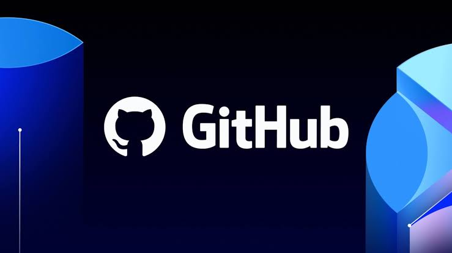

Carlos José Villanueva Ramos
📅 23 de julio 2026
9 meses aprendiendo a programar desde cero — mis errores, mis logros y lo que aprendí
En octubre de 2025, a mis 36 años, tomé una de las decisiones más importantes de mi vida: aprender a programar desde cero.
No sabía nada — literalmente nada.
No sabía usar VSCode, no entendía qué era GitHub, y la primera vez que vi código HTML sentí que era otro idioma.
Al principio cometía errores que hoy me parecen pequeños pero que en ese momento me frustraban: cerrar etiquetas al revés, confundir margin con padding, olvidar cerrar comillas.
Cada error fue una lección.
En este camino, la Inteligencia Artificial ha sido una herramienta fundamental.
No para que me haga el trabajo, sino para aprender — para entender por qué algo falla, cómo solucionarlo y cómo mejorar.
Usada así, la IA no nos hace menos como desarrolladores, nos hace más fuertes.
Hoy, 9 meses después, tengo casi 13 páginas web publicadas — una página médica, una de abogados, una tienda de camisetas, páginas de deportes, radio online y más.
Y algo que aprendí en este proceso es que crear una página web lleva tiempo y paciencia — algo que el usuario final no ve ni entiende, y es comprensible.
Pero detrás de cada página hay horas de trabajo, errores corregidos y problemas resueltos.
Lo que más me ha abierto los ojos es que en el mundo del desarrollo — ya sea web, software o fullstack — hay muchas puertas abiertas.
El camino no es fácil, pero siempre hay una oportunidad para quien tiene paciencia y herramientas.
Cuando algo falla, lo importante es saber por qué falló, dónde falló y cómo solucionarlo.
Si yo pude empezar a los 36 sin saber absolutamente nada, cualquier persona puede hacerlo. 🇨🇷💪
Escrito por Carlos José Villanueva Ramos programador y desarrollador en formación
Carlos José Villanueva Ramos
📅 24 de julio 2026
Con esta herramienta de zoom Claude puede leer mejor los detalles pequeños en imágenes
Cuando un detalle en una imagen es muy pequeño —una etiqueta diminuta en un gráfico, dos líneas casi pegadas— una persona simplemente se acerca para verlo mejor.
Claude no podía hacer eso: veía la imagen una sola vez, a una resolución fija.
Anthropic desarrolló una herramienta de zoom que le da a Claude esa capacidad.
Cuando detecta que algo es difícil de leer, Claude puede pedir ver una región específica de la imagen ampliada.
El sistema recorta esa zona desde la imagen original en alta resolución y se la devuelve más grande y legible.
Resultados: en pruebas de lectura de gráficos complejos, la precisión casi se duplicó al usar esta herramienta (de 29% a 73% en un modelo, y de 13% a 44% en otro).
En un caso donde dos líneas de un gráfico estaban separadas por apenas unos píxeles, el modelo acertó solo 4 de 40 veces sin la herramienta, pero 40 de 40 con ella.
La ventaja: mayor precisión al leer detalles finos. El costo: cada zoom añade tiempo y consumo de recursos extra.
Ver video original en X →
Carlos José Villanueva Ramos
📅 13 de agosto 2026
GitHub se actualiza: Información de licencias más precisa para los desarrolladores
Como desarrolladores, construir aplicaciones hoy en día es como armar un rompecabezas: dependemos de cientos de paquetes y librerías creadas por terceros.
Sin embargo, esto trae un gran reto legal: saber qué tipo de licencia tiene el código que estamos metiendo en nuestros proyectos.
GitHub acaba de dar un paso importante para solucionar esto, automatizando y limpiando su base de datos de licencias para que sea mucho más precisa y eficiente.
El gran cambio: Directo a la fuente oficial.
Anteriormente, GitHub utilizaba un servicio que escaneaba los archivos de código uno por uno para "adivinar" la licencia.
Este método era complejo y solía arrojar resultados confusos o incompletos.
Para solucionar esto, GitHub cambió su estrategia: ahora su sistema consulta directamente los registros oficiales (o fuentes principales) de cada lenguaje de programación.
Aquí tienes algunos ejemplos de dónde busca ahora:
Administrador de paquetes — Registro Oficial donde GitHub busca ahora:
npm (JavaScript/TypeScript) → npmjs.org,
Python → pypi.org,
Rust → crates.io,
Go → pkg.go.dev,
PHP → packagist.org
Los dos grandes beneficios de esta actualización:
Este cambio de lógica en el sistema trae dos mejoras brutales para el ecosistema de desarrollo:
✔️ 1. Adiós a las licencias "desconocidas"
Antes de este cambio, el 45% de los 170 millones de paquetes en el gráfico de dependencias de GitHub aparecía sin licencia registrada.
Esto era un dolor de cabeza para las empresas, que necesitan saber si pueden usar un código legalmente.
Con la nueva automatización, ese número se redujo casi a la mitad (al 24%), y la cobertura sigue mejorando.
✔️ 2. Rastreo inteligente por "Rangos de Versiones"
En el pasado, si una librería se actualizaba, alguien tenía que registrar manualmente en GitHub la licencia de esa nueva versión específica.
Ahora el sistema es capaz de entender rangos de versiones de forma automática. El artículo oficial menciona el caso de Grafana:
• El sistema sabe que de la versión 1.0.0 a la 7.5.17 usaron la licencia Apache 2.0.
• También sabe que de la versión 8.0.0 en adelante se mudaron a AGPLv3.
Gracias a esto, si mañana sale una versión nueva, GitHub sabrá qué licencia tiene sin que nadie tenga que meter el dato "a mano".
¿Por qué nos importa esto?
Para quienes subimos proyectos a GitHub o trabajamos en la industria, esto significa que las herramientas de seguridad de la plataforma (como las alertas de cumplimiento de licencias o los reportes SBOM) serán mucho más confiables.
Menos errores en la base de datos se traduce en un desarrollo más seguro y transparente para todos.
Como estudiante de desarrollo Full Stack, ver cómo plataformas como GitHub optimizan la gestión de datos me hace valorar aún más la importancia de la automatización y el orden en el código. ¡El futuro del desarrollo es cada vez más limpio!

Ver video 26/7/2026 Creando una pagina web educacional para un taller de decoración primera parte.
Carlos José Villanueva Ramos
📅 14 de agosto 2026
Gemini 3.7 Flash: La nueva apuesta de Google para programadores y agentes de IA
Google no se detiene en la carrera de la inteligencia artificial y ha presentado Gemini 3.7 Flash, su modelo más inteligente, rápido y económico hasta la fecha, diseñado especialmente para la generación de código y flujos de trabajo con agentes autónomos.
Lo más sorprendente es que esta actualización llega apenas tres semanas después de su versión anterior, respondiendo directamente a las necesidades reportadas por la comunidad de desarrolladores.
🚀 Las mejoras más destacadas:
Mayor precisión al programar: Logra mejores resultados en la depuración de errores (debugging) y en la generación de código listo para producción a la primera pasada.
Diseño web en un solo intento: En el área de desarrollo web, el modelo es capaz de crear aplicaciones completas y diseños funcionales a partir de una simple imagen, captura de pantalla o boceto.
Reducción masiva de costos: El precio de lanzamiento por millón de tokens se redujo a la mitad en comparación con Gemini 3.6 Flash, permitiendo escalar proyectos a producción sin disparar el presupuesto.
Integración con Gemini Spark: Este modelo alimentará a Spark, el agente personal de Google, haciendo que automatice tareas complejas como consolidar archivos, enviar correos y actualizar documentos en Google Workspace de forma mucho más rápida y precisa.
Resumen para el desarrollador: Gemini 3.7 Flash llega para ser un copiloto de código más independiente, que requiere menos supervisión manual y reduce significativamente los costos de procesamiento.
 Ver video 26/7/2026 Creando una pagina web educacional para un taller de decoración primera parte.
Ver video 26/7/2026 Creando una pagina web educacional para un taller de decoración primera parte.
Carlos José Villanueva Ramos
📅 25 de agosto 2026
Unificación del control de versiones e integración de herramientas en Antigravity 2.0
El equipo detrás de la plataforma Antigravity presentó una actualización orientada a mejorar el seguimiento de cambios de código sin necesidad de alternar entre múltiples aplicaciones.
Al integrar un panel de control de versiones (VCS) basado en Git y una terminal nativa en el lateral derecho de la interfaz, el sistema permite visualizar en tiempo real todas las modificaciones del proyecto (tanto las generadas por asistentes de IA como por scripts externos o ediciones manuales).
Los usuarios pueden revisar diferencias, preparar archivos, redactar commits y ejecutar comandos de línea desde un solo lugar.
Comentario: La necesidad de cambiar de contexto constantemente (del editor a la terminal externa) es una de las mayores fuentes de distracción para un programador.
Integrar estas herramientas nativamente dentro de entornos de asistencia con IA resuelve un problema real de flujo de trabajo (workflow), haciendo el proceso de revisión de código mucho más transparente y seguro.

Carlos José Villanueva Ramos
📅 25 de agosto 2026
Microsoft Marketplace integra búsqueda inteligente para impulsar la implementación de IA corporativa
Bajo la firma de Kevin LeBlanc, Microsoft destaca la transición que están realizando las empresas desde la mera experimentación hacia la integración práctica de la inteligencia artificial en sus decisiones operativas cotidianas (la llamada Transformación de Frontera). Ante la estimación de que existirán más de mil millones de agentes de IA operando para 2028 y la tendencia de los compradores B2B a preferir procesos digitales sin intermediarios, surge la necesidad de optimizar los métodos de adquisición tecnológica.
Para resolver este desafío, Microsoft Marketplace desplegó a nivel global la función de "descubrimiento inteligente". Esta herramienta permite a los tomadores de decisiones buscar aplicaciones y agentes de IA mediante lenguaje conversacional en lugar de simples palabras clave, evaluar soluciones de forma comparativa y hacer consultas interactivas directas en el catálogo. Según datos preliminares, esta innovación incrementa en un 68% las probabilidades de que las empresas encuentren rápidamente la solución adecuada para sus necesidades específicas.
Comentario destacado:
"La transformación mediante IA no se definirá únicamente por los avances en modelos, aplicaciones o agentes. También se definirá por la eficacia con la que las organizaciones adopten las soluciones tecnológicas adecuadas para integrar la IA en el núcleo del negocio." — Kevin LeBlanc, Director general de Marketing para Socios y Mercados de Microsoft.
"Una encuesta realizada a 646 compradores B2B [...] reveló que este cambio ya está en marcha, y el 45% informó haber utilizado IA durante una compra reciente." — Informe de Gartner® (2025).
Carlos José Villanueva Ramos
📅 13 de septiembre 2026
🔧 GitHub le abre la puerta a herramientas externas dentro de tu flujo de trabajo
Cuando un desarrollador quiere hacer un cambio en su proyecto, casi nunca alcanza con escribir el código. Antes hay que responder varias preguntas: ¿este cambio tiene sentido según cómo lo usan los usuarios reales? ¿Las piezas de código externo que estoy tocando son seguras? ¿Cómo lo publico sin arriesgar todo de una vez? ¿Es un buen momento para publicarlo, o hay algo roto ahora mismo en el sistema?
El problema es que cada una de esas respuestas suele vivir en una herramienta distinta, así que terminás saltando entre pestañas y perdiendo el hilo del trabajo.
GitHub presentó una solución a esto: las aplicaciones de agente. Son integraciones que te permiten "invitar" herramientas externas directamente a tu flujo de trabajo en GitHub, y consultarlas como si fueran un compañero más del equipo, mencionándolas en un comentario, sin salir de la plataforma.
El artículo original explica el proceso con un caso concreto, dividido en cuatro momentos del desarrollo:
1. Antes de programar: el desarrollador le pregunta directamente al agente de Amplitude (una herramienta de análisis de datos de producto) si el cambio que quiere hacer realmente tiene respaldo en el comportamiento de los usuarios, en vez de asumirlo a ciegas.
2. Mientras se programa: el agente de Endor Labs revisa automáticamente si las dependencias (código de terceros) que se modificaron en ese cambio tienen vulnerabilidades conocidas, antes de que eso se convierta en un problema más adelante.
3. Al desplegar: se le pide al agente de LaunchDarkly que configure una "bandera de función" — un interruptor que permite activar el cambio gradualmente (por ejemplo, mostrarlo primero a un grupo pequeño de usuarios, e ir ampliándolo si todo va bien) sin tener que reescribir código cada vez.
4. Antes de publicar: el agente de PagerDuty evalúa si es un buen momento para lanzar el cambio, revisando si hay incidentes activos o antecedentes de problemas en esa parte del sistema.
Lo interesante es que en ningún momento se reparte el trabajo entre "compañeros" que resuelven partes distintas del código — sigue siendo un solo desarrollador tomando las decisiones. Lo que cambia es que ahora tiene la información especializada de cuatro herramientas distintas disponible en el mismo lugar donde ya trabaja, en vez de tener que salir a buscarla por separado.
Mi análisis: Como estudiante de desarrollo, esto me parece una muestra clara de hacia dónde va la industria: no se trata de reemplazar al programador, sino de ahorrarle el tiempo perdido saltando entre herramientas para poder enfocarse en decidir bien. Es un concepto que algún día, aunque sea en versión simplificada, podría aplicarse hasta en proyectos personales como los míos.
Fuente: GitHub Blog / Sam Zhang
Carlos José Villanueva Ramos
📅 14 de septiembre 2026
🤖 Un bot de IA que corre en tu propia máquina: el experimento Standup Pulse

Cuando un equipo de programadores trabaja repartido en distintos países, cada mañana hacen lo que se llama una "reunión diaria": cada quien cuenta qué hizo ayer, qué va a hacer hoy y si algo lo tiene trabado. Si el equipo está en husos horarios distintos, esa reunión se vuelve imposible de coordinar en vivo, así que se hace por escrito en un chat como Slack.
Murat Sari construyó Standup Pulse, un bot que automatiza justamente eso, pero con una particularidad interesante: la mayor parte del sistema corre en su propia computadora, no en la nube de una empresa.
¿Cómo funciona? Un compañero menciona al bot en Slack y escribe su reporte del día. El bot lo lee, entiende el texto, lo guarda ordenado en una base de datos local, y responde con una tarjeta de confirmación. Además, hay un panel de control donde se ve quién reportó, quién falta y qué obstáculos hay en el equipo.
Lo llamativo del proyecto es el concepto de "local-first" (primero local): el modelo de inteligencia artificial que interpreta los mensajes corre en la máquina del autor, igual que los datos y el panel. Slack sigue guardando las conversaciones, y un servicio intermedio se encarga de llevar y traer los mensajes, pero la parte sensible —la información del equipo y el procesamiento del lenguaje— nunca sale de su computadora.
El autor es transparente en algo importante: el proyecto es "local primero", pero no completamente local. Y también deja claro un detalle de seguridad bien pensado: el modelo de IA nunca decide quién sos vos. Esa identidad la entrega Slack de forma verificada, así que el modelo no puede registrar un reporte a nombre de otra persona aunque se equivoque interpretando el mensaje.
Mi análisis: Lo que más me llamó la atención de este proyecto es que no se trata de "la IA lo hace todo", sino de darle a la IA una tarea muy específica (entender el texto) y dejar que el código normal se encargue de las decisiones importantes: quién es cada persona, qué fecha es, si el dato ya se guardó antes. Esa separación entre "lo que el modelo interpreta" y "lo que el sistema decide" me parece una lección valiosa para cualquiera que esté empezando a integrar IA en sus proyectos.
Fuente: Murat Sari, revisado por Rainer Hahnekamp (17 de agosto de 2026)
Carlos José Villanueva Ramos
📅 14 de septiembre 2026
🐬 MySQL 26.7: cuando la comunidad empuja y se nota en los números

MySQL es una de las bases de datos más usadas del mundo — si alguna vez vas a guardar usuarios, productos o publicaciones en un proyecto web, es muy probable que termines cruzándote con ella. Y algo interesante de MySQL es que, aunque pertenece a Oracle, cualquier programador de la comunidad puede aportar mejoras al código.
Scott Stroz, defensor de desarrolladores de MySQL, publicó las cifras de participación de la comunidad en la versión 26.7, y los números muestran un salto importante.
Las contribuciones se dispararon: la versión 26.7 recibió 43 aportes de la comunidad, contra apenas 11 de la versión anterior. Es casi cuatro veces más, y más del doble del mejor registro previo.
Más gente distinta participando: no fue una sola persona haciendo mucho. Hubo 18 colaboradores únicos (contra 13 antes), y de esos, 9 eran completamente nuevos en el proyecto.
Actividad de errores: desde enero de 2025 se reportaron 1653 errores, de los cuales 858 ya fueron resueltos. Entre finales de julio y principios de septiembre se sumaron 76 reportes nuevos y 39 soluciones.
Interés en la versión nueva: en apenas dos días, MySQL 26.7 registró casi 35.000 descargas.
El artículo destaca algo que me parece clave: cada persona que reporta un error está, en la práctica, ayudando a mejorar el producto para todos los demás. No hace falta ser un experto que reescribe el motor de la base de datos — reportar que algo no funciona en tu entorno específico ya es una contribución real.
Mi análisis: Esta noticia me dejó pensando en algo. Uno suele ver el software como algo terminado que simplemente descargás y usás, pero detrás hay gente común aportando correcciones. Que 9 personas nuevas se hayan sumado en una sola versión significa que la puerta de entrada al código abierto sigue abierta. Es un recordatorio de que en algún momento, cuando tenga más experiencia, contribuir a un proyecto así es algo totalmente alcanzable y no reservado solo para programadores de élite.
Fuente: Scott Stroz, The Oracle MySQL Blog (4 de septiembre de 2026)
Carlos José Villanueva Ramos
📅 14 de septiembre 2026
💻 Windows 365: programar desde una computadora que vive en la nube

Cualquiera que haya intentado configurar un entorno de programación desde cero sabe lo que duele: instalar el editor, el lenguaje, las librerías, resolver que una versión no coincide con otra, y descubrir que en la computadora del compañero funciona pero en la tuya no. Phil Gerity plantea que ese tiempo perdido en configurar máquinas es justamente lo que Windows 365 busca eliminar.
La idea de fondo es una "PC en la nube": en vez de que todo tu entorno de trabajo viva en tu computadora física, vive en un servidor de Microsoft al que accedés desde una aplicación o directamente desde el navegador. Tu código, tus configuraciones y el estado de tus proyectos quedan ahí, disponibles desde cualquier dispositivo.
El artículo señala cinco puntos donde esto ayuda al desarrollo moderno:
1. Entorno listo desde el primer día: la máquina se puede preparar con las herramientas y configuraciones ya instaladas antes de que el programador inicie sesión por primera vez.
2. Potencia ajustable e IA local: se puede elegir cuánta capacidad de procesamiento necesita cada proyecto, y hasta correr modelos de lenguaje directamente en esa máquina virtual.
3. Control de agentes de IA: como cada vez más programadores usan agentes automáticos que escriben código y ejecutan tareas solos, el sistema permite aislarlos para que su actividad quede contenida.
4. Entornos dedicados para agentes empresariales: máquinas separadas donde los agentes de IA pueden trabajar sin depender del equipo personal de nadie.
5. Proteger el trabajo sensible: controles que limitan, por ejemplo, qué se puede copiar y pegar o qué dispositivos se pueden conectar, según las condiciones de seguridad de la empresa.
El artículo aclara algo importante: esto no reemplaza a la computadora local. Los equipos físicos siguen siendo necesarios cuando se requiere acceso directo al hardware o trabajar sin conexión. La propuesta es que cada programador pueda elegir el entorno que mejor le sirva para cada tarea.
Mi análisis: Como alguien que trabaja desde su propia computadora en Cartago, este tipo de noticias me muestra una realidad de las empresas grandes que todavía me queda lejos — pero el problema de fondo lo entiendo perfectamente: el tiempo que se pierde configurando en vez de programando. Y me deja una reflexión: si algún día trabajo para una empresa fuera del país, es muy posible que ni siquiera necesite una computadora potentísima, porque el entorno de trabajo va a estar en la nube. Eso abre puertas para gente de países como el nuestro.
Fuente: Phil Gerity, Microsoft (Blog de Windows)